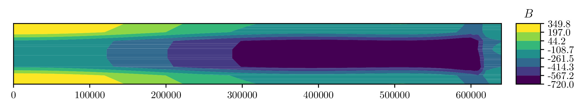
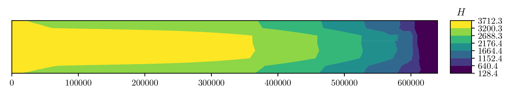
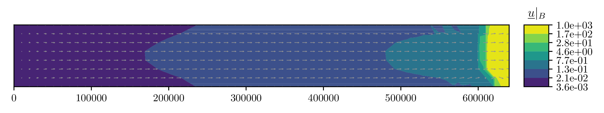
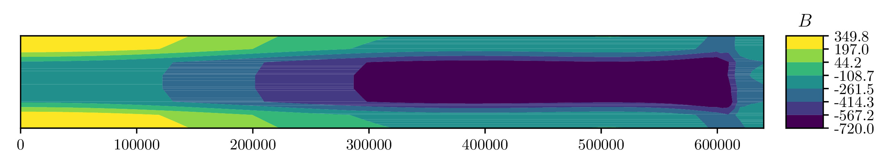
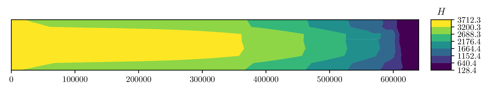
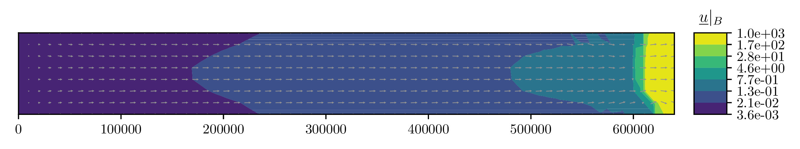
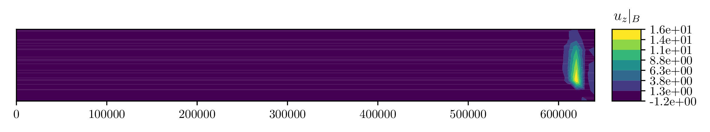
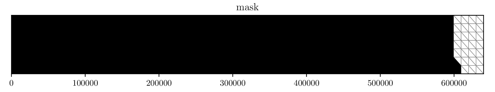
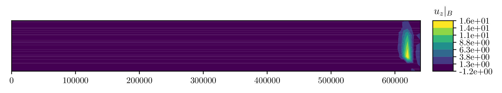
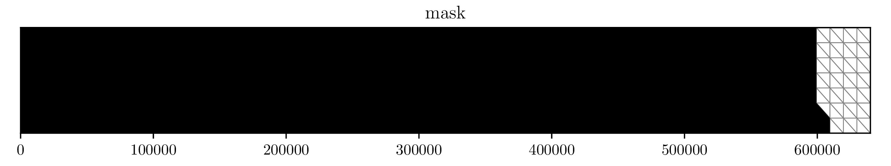

MISMIP+¶
This page describes another example that does not require any external data; the “3rd Marine Ice Sheet Model Intercomparison Project”.
Set up the model¶
First, import all the packages we will need:
import issm as im
import numpy as np
Next, create some variables to use later on which set the physics and output directories to save too:
# directories for saving data :
mdl_odr = 'HO' #'FS' # [H]igher [O]rder momentum
lat_slip = True # let the velocity slip on the edges
name = 'lateral_slip' # the name of the simulation
if mdl_odr == 'HO': mdl_pfx = 'BP'
else: mdl_pfx = mdl_odr
out_dir = './results/' + mdl_pfx + '/' # directory for data
# create the output directory if it does not exist :
import os
d = os.path.dirname(out_dir)
if not os.path.exists(d):
os.makedirs(d)
Next, create an empty model instance and name the simulation:
md = im.model()
md.miscellaneous.name = name
The input variables are provided by [asay-davis_2016]:
Lx = 640000.0 # [m] domain length (along ice flow)
Ly = 80000.0 # [m] domain width (across ice flow)
dx = 10000.0 # [m] element diameter
nx = int(Lx/dx) # [--] number of x-coordinate divisions
ny = int(Ly/dx) # [--] number of y-coordinate divisions
B0 = -150.0 # [m] bedrock topography at x = 0
B2 = -728.8 # [m] second bedrock topography coefficient
B4 = 343.91 # [m] third bedrock topography coefficient
B6 = -50.57 # [m] second bedrock topography coefficient
xbar = 300000.0 # [m] characteristic along-flow length scale of bedrock
fc = 4000.0 # [m] characteristic width of channel walls
dc = 500.0 # [m] depth of the trough compared to its walls
wc = 24000.0 # [m] half width of the trough
zd = -720.0 # [m] maximum depth of the bedrock topography
thklim = 10.0 # [m] thickness limit
rhow = 1028.0 # [kg m^-3] density of seawater
rhoi = 918.0 # [kg m^-3] density of glacier ice
g = 9.81 # [m s^2] gravitational acceleration
spy = 31556926.0 # [s a^-1] seconds per year
Hini = 100.0 # [m] initial ice thickness
Tm = 273.15 # [K] melting temperature of ice
n = 3.0 # [--] Glen's exponent
A = 2e-17 # [Pa^{-n} s^{-1}] flow
beta = 1e4 # [Pa m^{-1/n} a^{-1/n}] friction coefficient
p = 3.0 # [--] Paterson friction exponent one
q = 0.0 # [--] Paterson friction exponent two
adot = 0.3 # [m a^{-a}] surface-mass balance
tf = 20000.0 # [a] final time
dt = 1 # [a] time step
dt_sav = 10.0 # [a] time interval to save data
cfl = 0.5 # [--] CFL coefficient
num_p = 2 # [--] number of processor cores to use
Next, we make a simple two-dimensional box mesh with nx cells in the \(x\) direction and ny cells in the \(y\) directions over a width of Lx and height Ly using squaremesh:
md = im.squaremesh(md, Lx, Ly, nx=nx, ny=ny)
Let the entire domain be defined over grounded ice with setmask:
md = im.setmask(md, 'all', '')
It will be helpful for the rest of the script to set up the element-wise multiplicative identities now:
# rank-zero tensor vertex ones vector :
v_ones = np.ones(md.mesh.numberofvertices)
# rank-zero tensor element ones vector :
e_ones = np.ones(md.mesh.numberofelements)
# rank-two tensor ones vector :
A_ones = np.ones((md.mesh.numberofvertices, 6))
# rank-one tensor ones vector :
b_ones = np.ones((md.mesh.numberofvertices, 3))
The MISMIP+ geometry are specified by [gudmundsson_2012] and defined by Equations (1)–(4) of [asay-davis_2016]:
# the ice thickness is initialized as constant :
H = Hini * v_ones
# eq'n (3)
xt = md.mesh.x / xbar
# eq'n (2) :
Bx = B0 + B2*xt**2 + B4*xt**4 + B6*xt**6
# eq'n (4) :
By = + dc / (1 + np.exp(-2*(md.mesh.y - Ly/2 - wc) / fc)) \
+ dc / (1 + np.exp( 2*(md.mesh.y - Ly/2 + wc) / fc))
# lower topography (eq'n 1) :
zb = np.maximum(Bx + By, zd*v_ones)
The bottom of the ice sheet is calculated by adjusting the upper-surface height \(S\) to the height it would be if it were floating:
# upper surface which does not take into account flotation :
S = zb + H
# grounded ice level-set flotation :
ls = H + rhow / rhoi * zb
# get indicies of grounded (gnd) and floating (flt) ice :
gnd = ls > 0
flt = ls <= 0
# correct upper surface to be in equilibrium with the flotation height :
S[flt] = H[flt] * (1 - rhoi / rhow)
then the lower surface is adjusted to remain at the desired thickness:
# lower surface :
B = S - H;
Finally, the ice sheet mask is given by simply converting the boolean NumPy array gnd to an array of integers required by issm:
# ice is grounded where mask == 1 :
mask = gnd.astype('int')
We will need to define the rheological parameter \(B\):
Bf = (A / spy)**(-1/n)
The material parameters may be changed to match those of the ISMIP HOM experiment by changing either the model’s constants or material properties matice:
md.materials.rho_ice = rhoi
md.materials.rho_water = rhow
md.constants.g = g
md.constants.yts = spy
The geometry and ice masks are initialized from the above arrays as follows:
md.geometry.surface = S
md.geometry.base = B
md.geometry.thickness = H
md.geometry.bed = zb
md.mask.groundedice_levelset = mask # ice is grounded where == 1
md.mask.ice_levelset = -1 * v_ones # ice is present when negative
Basal-sliding friction is initialized using the friction coefficient:
md.friction.p = p * e_ones
md.friction.q = q * e_ones
md.friction.coefficient = beta * v_ones
The rheology parameters are also set within the material properties matice:
md.materials.rheology_B = Bf * v_ones
md.materials.rheology_n = n * e_ones
md.materials.rheology_law = "None"
The basalforcings are initialized with no basal meting to begin:
md.basalforcings.geothermalflux = 0.0 * v_ones
md.basalforcings.groundedice_melting_rate = 0.0 * v_ones
md.basalforcings.floatingice_melting_rate = 0.0 * v_ones
Next, configure the model for “marine-ice-sheet” boundary conditions via SetMarineIceSheetBC:
# Set the default boundary conditions for an ice-sheet :
md = im.SetMarineIceSheetBC(md, './exp/mismip_front.exp')
The ice front must be specified, and is saved as the file ./exp/mismip_front.exp given by:
## Name:icefront
## Icon:0
# Points Count Value
5 1.
# X pos Y pos
639999 -1
640001 -1
640001 80001
639999 80001
639999 -1
Note this is just a rectangle surrounding each face of the Eastern-most edge.
In order to apply lateral slip along the North, South, and West boundaries, we have to manually deterimine the nodal indicies of the \(x\)-component of velocity spcvx, \(y\)-component of velocity spcvy, and \(z\)-component of velocity spcvz within the stressbalance class and set them to np.nan:
# apply lateral slip on north, south, and west boundaries :
if lat_slip: slip = np.nan
else: slip = 0.0
# inflow boundary condition :
pos_w = np.where(md.mesh.x < 0.1)[0]
md.stressbalance.spcvx[pos_w] = 0.0
md.stressbalance.spcvy[pos_w] = slip
md.stressbalance.spcvz[pos_w] = slip
# north wall :
pos_n = np.where(md.mesh.y > np.max(md.mesh.y) - 0.1)[0]
md.stressbalance.spcvx[pos_n] = slip
md.stressbalance.spcvy[pos_n] = 0.0
md.stressbalance.spcvz[pos_n] = slip
# south wall :
pos_s = np.where(md.mesh.y < 0.1)[0]
md.stressbalance.spcvx[pos_s] = slip
md.stressbalance.spcvy[pos_s] = 0.0
md.stressbalance.spcvz[pos_s] = slip
# go back and ensure that the west corners have zero x-component velocity :
md.stressbalance.spcvx[pos_w] = 0.0
Note above that if lat_slip had been specified as False at the beginning of our script, no-slip boundary conditions would have been applied.
The upper-surface mass balance \(\mathring{S}\) is initialized:
md.smb.mass_balance = adot * v_ones
Grounding-line migration is a complicated subject, and the folks at JPL/UCI have developed several different numerical schemes you may choose to use, here I chose SubelementMigration by setting the migration parameter within the model’s groundingline class:
#md.groundingline.migration = 'SoftMigration'
md.groundingline.migration = 'SubelementMigration'
#md.groundingline.migration = 'SubelementMigration2'
#md.groundingline.migration = 'AggressiveMigration'
#md.groundingline.migration = 'None'
The free-surface parameters are set within the model’s masstransport class:
md.masstransport.hydrostatic_adjustment = 'Incremental'
md.masstransport.spcthickness = np.nan * v_ones
md.masstransport.stabilization = 1
Here, we set no constraint on the thickness by setting the spcthickness parameter to np.nan and use streamline-upwind/Petrov-Galerkin stabilization by setting stabilization = 1.
The numerical solver will complain if the unknowns are not initialized to something:
md.initialization.vx = 0.0 * v_ones
md.initialization.vy = 0.0 * v_ones
md.initialization.vz = 0.0 * v_ones
md.initialization.vel = 0.0 * v_ones
md.initialization.pressure = rhoi * g * H
md.initialization.temperature = Tm * v_ones
The transient solver parameters are set as follows:
md.transient.isstressbalance = 1
md.transient.isgroundingline = 1
md.transient.ismasstransport = 1
md.transient.issmb = 1
md.transient.isthermal = 0
md.timestepping.time_adapt = 0 # not adaptive time stepping
md.timestepping.cfl_coefficient = cfl # used if adaptive time stepping
md.timestepping.time_step = dt
md.timestepping.final_time = tf
md.settings.output_frequency = int(dt_sav/dt)
md.transient.requested_outputs = ['default',
'GroundedArea',
'FloatingArea',
'IceVolume',
'IceVolumeAboveFloatation']
Now we will convert the two-dimensional mesh into three dimensions by extruding the mesh vertically 5 cells in the \(z\) direction with extrude():
# now, extrude and set the basal boundary conditions :
md.extrude(6, 1.0)
and set the appropriate “flow equation” with setflowequation:
# specifiy the flow equation and FE basis :
md = im.setflowequation(md, mdl_odr, 'all')
md.flowequation.fe_HO = 'P1'
It will be necessary later to recall the initial model for plotting, so we save the model just prior to solving the transient using savevars():
# save the state of the model :
im.savevars(out_dir + 'mismip_init.md', 'md', md)
Solve the momentum balance¶
Now, set up the computing environment variables using the generic class, enable verbose solver output with verbose, and finally solve the system with the solve class with num_p CPU processes:
md.cluster = im.generic('name', im.gethostname(), 'np', num_p)
md.verbose = im.verbose('solution', True, 'control', True, 'convergence', True)
md = im.solve(md, 'Transient')
# save the state of the model :
im.savevars(out_dir + name + '.md', 'md', md)
var_dict = {'md.results.TransientSolution' : md.results.TransientSolution}
im.savevars(out_dir + name + '.shelve', var_dict)
Note that currently, savevars() will work for small problems, but fails without error for large amounts of data.
Plot the results¶
You can utilize the plotting capabilities of the fenics_viz package to plot the solution as follows.
First, we import the packages we need:
from fenics_viz import print_text, plot_variable
import issm as im
import numpy as np
Next, we set the input directory to out_dir set in the previous script, as well as the time-step \(\Delta t\) between output results we set earlier named dt_sav:
# directories for saving data :
mdl_odr = 'HO'
name = 'lateral_slip'
dt = 10
if mdl_odr == 'HO': mdl_pfx = 'BP'
else: mdl_pfx = mdl_odr
out_dir = './results/' + mdl_pfx + '/'
We will output the images in a uniquie directory here:
plt_dir = './images/' + mdl_pfx + '/' + name + '/'
Next, we load the model using loadmodel:
md = im.loadmodel(out_dir + name + '.md')
Record the total number of solutions saved, here the output was set the solution script to every 10 years within the transient instantiation’s results class object:
n = len(md.results.TransientSolution)
Next, we have to get the upper and lower surface vertex indicies so that we can extract the solution values a the lower surface \(z=B\) and upper surface \(z=S\), respectively:
vbed = md.mesh.vertexonbase
vsrf = md.mesh.vertexonsurface
The vertex coordinates coords and cell connectivity indices cells are saved in two dimensions within the model’s mesh data:
coords = (md.mesh.x2d, md.mesh.y2d)
cells = md.mesh.elements2d - 1
Now, the fenics_viz package’s plot_variable function will take a number of parameters we can set here:
# set the mesh plot parameters :
tp_kwargs = {'linestyle' : '-',
'lw' : 0.5,
'color' : 'k',
'alpha' : 0.5}
# set the vector plot parameters :
quiver_kwargs = {'pivot' : 'middle',
'color' : '0.5',
'scale' : 100,
'alpha' : 1.0,
'width' : 0.001,
'headwidth' : 3.0,
'headlength' : 3.0,
'headaxislength' : 3.0}
# the plot parameters will mostly stay the same for each plot :
plot_kwargs = {'direc' : plt_dir,
'coords' : coords,
'cells' : cells,
'figsize' : (8, 1.5),
'cmap' : 'viridis',
'scale' : 'lin',
'numLvls' : 8,
'levels' : None,
'levels_2' : None,
'umin' : None,
'umax' : None,
'plot_tp' : False,
'tp_kwargs' : tp_kwargs,
'show' : False,
'hide_x_tick_labels' : False,
'hide_y_tick_labels' : True,
'xlabel' : '',
'ylabel' : '',
'equal_axes' : True,
'hide_axis' : False,
'colorbar_loc' : 'right',
'contour_type' : 'filled',
'extend' : 'neither',
'ext' : '.pdf',
'normalize_vec' : True,
'plot_quiver' : True,
'quiver_kwargs' : quiver_kwargs,
'res' : 150,
'cb' : True,
'cb_format' : '%.1f'}
First, we plot the bedrock topography, which is invariant with time:
# the bed topography :
plot_kwargs['title'] = r'$z_b$'
plot_kwargs['u'] = md.geometry.bed[vbed].flatten()
plot_kwargs['name'] = 'z_b'
plot_variable(**plot_kwargs)
Next, we loop through and plot the solutions every \(\Delta t *10 = 100\) years:
for i in range(0,n,10):
# get this solution :
soln_i = md.results.TransientSolution[i]
# the `plot_variable` function requires the output data be row vectors :
S = soln_i.Surface[vbed].flatten()
B = soln_i.Base[vbed].flatten()
H = soln_i.Thickness[vbed].flatten()
p = soln_i.Pressure[vbed].flatten()
u_x_s = soln_i.Vx[vsrf].flatten()
u_y_s = soln_i.Vy[vsrf].flatten()
u_z_s = soln_i.Vz[vsrf].flatten()
u_x_b = soln_i.Vx[vbed].flatten()
u_y_b = soln_i.Vy[vbed].flatten()
u_z_b = soln_i.Vz[vbed].flatten()
ls = soln_i.MaskGroundediceLevelset[vbed].flatten()
# form the velocity vectors :
u_s = np.array([u_x_s, u_y_s], u_z_s])
u_b = np.array([u_x_b, u_y_b], u_z_b])
# calculate the grounded/floating mask :
mask = (ls > 0).astype('int')
# the simulation time :
time = i*dt
# plot the upper-surface height :
plot_kwargs['title'] = r'$S$'
plot_kwargs['u'] = S
plot_kwargs['name'] = 'S_%i' % time
plot_kwargs['scale'] = 'lin'
plot_kwargs['cmap'] = 'viridis'
plot_kwargs['cb_format'] = '%.1f'
plot_kwargs['plot_tp'] = False
plot_variable(**plot_kwargs)
# plot the lower-surface height :
plot_kwargs['title'] = r'$B$'
plot_kwargs['u'] = B
plot_kwargs['name'] = 'B_%i' % time
plot_kwargs['scale'] = 'lin'
plot_kwargs['cmap'] = 'viridis'
plot_kwargs['cb_format'] = '%.1f'
plot_kwargs['plot_tp'] = False
plot_variable(**plot_kwargs)
# plot the ice thickness :
plot_kwargs['title'] = r'$H$'
plot_kwargs['u'] = H
plot_kwargs['name'] = 'H_%i' % time
plot_kwargs['scale'] = 'lin'
plot_kwargs['cmap'] = 'viridis'
plot_kwargs['cb_format'] = '%.1f'
plot_kwargs['plot_tp'] = False
plot_variable(**plot_kwargs)
# plot the vertical component of the upper-surface velocity :
plot_kwargs['title'] = r'$u_z |_S$'
plot_kwargs['u'] = u_z_s
plot_kwargs['name'] = 'u_z_s_%i' % time
plot_kwargs['scale'] = 'lin'
plot_kwargs['cmap'] = 'viridis'
plot_kwargs['cb_format'] = '%.1e'
plot_kwargs['plot_tp'] = False
plot_variable(**plot_kwargs)
# plot the vertical component of the lower-surface velocity :
plot_kwargs['title'] = r'$u_z |_B$'
plot_kwargs['u'] = u_z_b
plot_kwargs['name'] = 'u_z_b_%i' % time
plot_kwargs['scale'] = 'lin'
plot_kwargs['cmap'] = 'viridis'
plot_kwargs['cb_format'] = '%.1e'
plot_kwargs['plot_tp'] = False
plot_variable(**plot_kwargs)
# plot the upper-surface velocity :
plot_kwargs['title'] = r'$\underline{u} |_S$'
plot_kwargs['u'] = u_s
plot_kwargs['name'] = 'U_s_%i' % time
plot_kwargs['scale'] = 'log'
plot_kwargs['cmap'] = 'viridis'
plot_kwargs['cb_format'] = '%.1e'
plot_kwargs['plot_tp'] = False
plot_variable(**plot_kwargs)
# plot the lower-surface velocity :
plot_kwargs['title'] = r'$\underline{u} |_B$'
plot_kwargs['u'] = u_b
plot_kwargs['name'] = 'U_b_%i' % time
plot_kwargs['scale'] = 'log'
plot_kwargs['cmap'] = 'viridis'
plot_kwargs['cb_format'] = '%.1e'
plot_kwargs['plot_tp'] = False
plot_variable(**plot_kwargs)
# plot the floating-ice mask :
plot_kwargs['title'] = r'mask'
plot_kwargs['u'] = mask
plot_kwargs['name'] = 'mask_%i' % time
plot_kwargs['scale'] = 'bool'
plot_kwargs['cmap'] = 'gist_yarg'
plot_kwargs['cb_format'] = '%g'
plot_kwargs['plot_tp'] = True
plot_variable(**plot_kwargs)
This will produce a plot of final state of the model after \(t = 20000\) years like so:

 






 



Note that the velocity vectors have been normalized using the keyword argument (kwarg) normalize_vec = True of the dictionary plot_kwargs.
References:¶
| [asay-davis_2016] | (1, 2) https://www.geosci-model-dev.net/9/2471/2016/ |
| [gudmundsson_2012] | https://www.the-cryosphere.net/6/1497/2012/ |